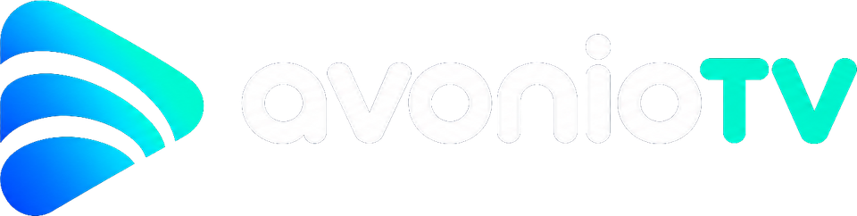

avonioTV Studio
Arrange your avonioTV channels comfortably with a mouse: hide countries, sort channels, number them and build your own folders, then send it to the TV.
Download for Mac Download for WindowsGetting started
1. On the TV: Settings › Live TV › Channels › turn on Allow avonioTV Studio.
2. Mac: unzip, move avonioTV Studio to Applications. The first time, right-click it › Open (on newer macOS: System Settings › Privacy & Security › Open Anyway).
Windows: just start the file; it needs no installing.
3. It finds your TV by itself. Make your changes and press Send to TV, then confirm on the TV.